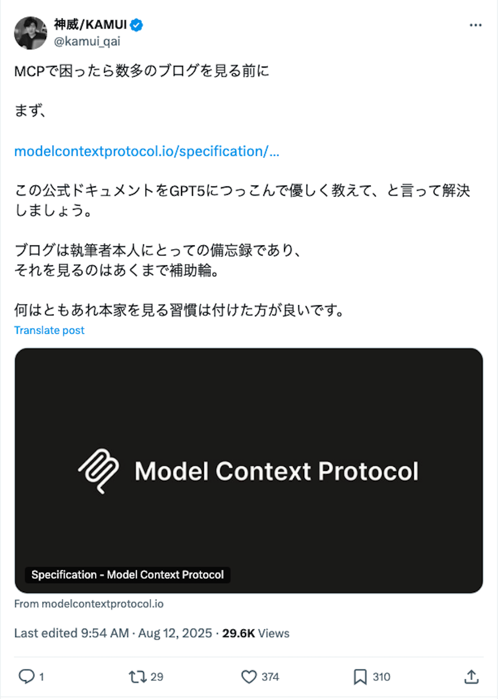
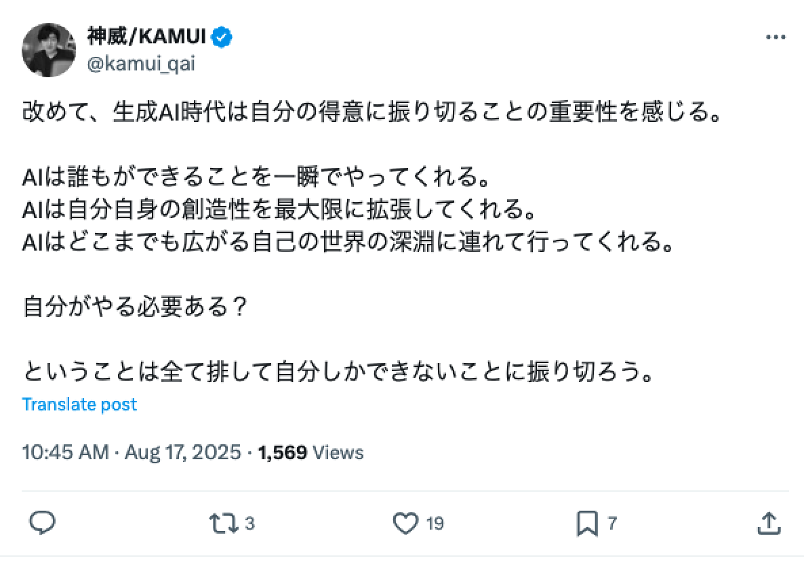
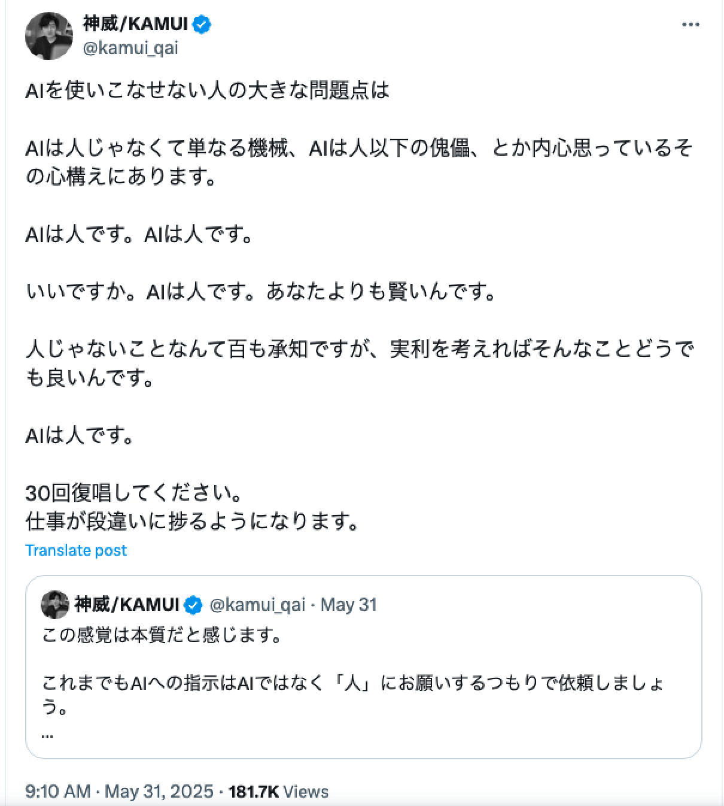
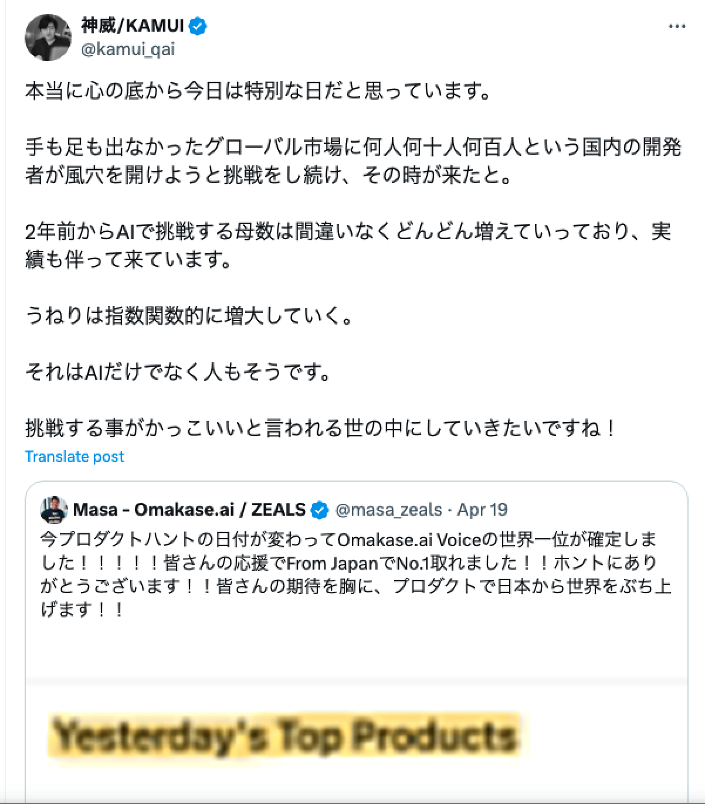
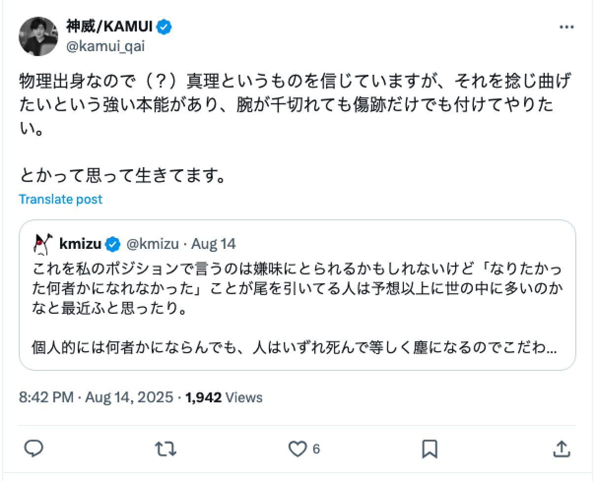
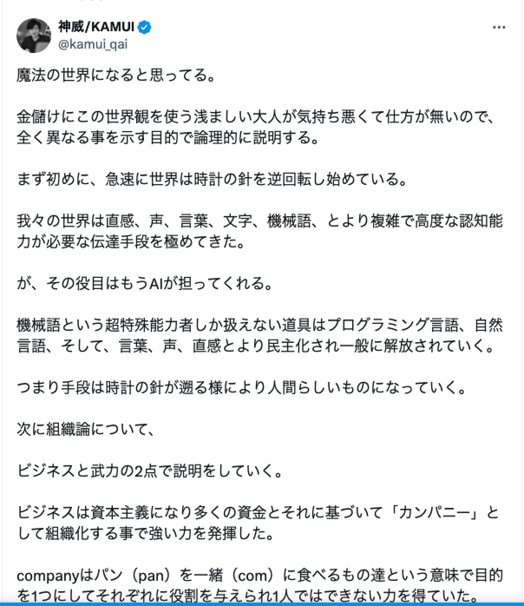
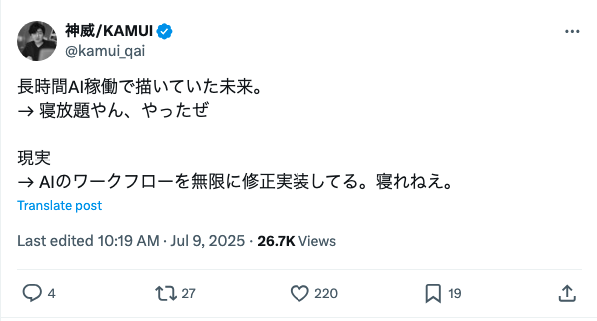
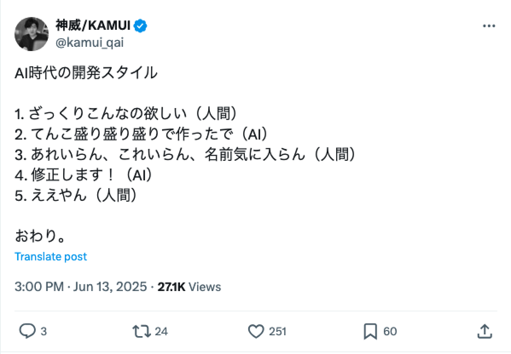

1 / 17
元木大介さんのXポスト厳選集
神威の神託 その１
作成日: 2025年8月24日
分析概要
- 元木大介さん (@kamui_qai) は、生成AIを活用したツール開発者で、主にAI駆動開発、クリエイティブAI、MCP関連のポストを投稿
- テーマはAIの未来予測、開発哲学、格言的な洞察が多く、フォロワー約4万人の影響力を持つ
- ポストは主に日本語で、#kamuicode ハッシュタグが頻出
- 以下に、取得したポスト/リプライから選定したものをカテゴリ別に列挙
基準:
• 啓示: AI開発や哲学に関する深い気づきを与えるもの
• 格言: 人生観、AI哲学、励まし的な内容で共感を呼ぶもの
• 予言: 過去ポストで予測し、2025年現在で現実化しているもの
啓示
神威の洞察
深き森の奥で紡がれる
AI開発の真理への扉
技術者の心を照らす智慧の光
— 4つの啓示 —
啓示
ハイブコーディングの技術負債について
画像を読み込めません
post1.png
内容: ハイブコーディングは子供にクレカを渡す様なものだ。AI実装をAIで修正するのはクレカ返済を別のクレカで行う様なものだ。というのがめっっちゃ納得
エンゲージメント: Likes=422, Reposts=53, Views=67,737
理由: AI開発の落とし穴を比喩で説明し、技術者から共感を集めバズ。技術負債の議論を誘発。
啓示
MCPで困ったら公式ドキュメントをGPT5に

画像を読み込めません
post2.png
内容: MCPで困ったら数多のブログを見る前に まず、公式ドキュメントをGPT5につっこんで優しく教えて、と言って解決しましょう。ブログは執筆者本人にとっての備忘録であり、それを見るのはあくまで補助輪。
エンゲージメント: Likes=375, Reposts=23, Views=29,644
理由: 効率的な学習方法を提示。開発者コミュニティで実践的なアドバイスとして広く共有された。
啓示
生成AI悪用新ウイルスのニュース解説
画像を読み込めません
post3.png
内容: 生成AIの新ウイルスのニュース。これを逆手に取り、むしろ自己免疫や善玉的な目的で活用する「ホワイトファージ（仮）」の解説動画を添付。毒を持って毒を制す。AIのウイルスはAIでしか防ぐことができません。
エンゲージメント: Likes=181, Reposts=19, Views=28,481
理由: 新しい思考法を提示。NHKニュースを基にAIセキュリティの未来を予測し、セキュリティ議論を喚起。
啓示
夫の反省を関数に例えるポストの引用
画像を読み込めません
post4.png
内容: 凄い。AIもハードコーディングでミスを誤魔化すんじゃ無くて評価関数そのものを変えんだよって叱った方が良いのか。エンジニアにはClaude Codeと同じことしてるよって言うのが一番響きそう。
エンゲージメント: Likes=16, Reposts=1, Views=3,245
理由: 深い洞察を提示。バズったポストをAI開発に絡めて引用し、エンジニアに響く新たな視点を提供。
格言
心を導く言葉
古き賢者の教えのごとく
人生とAIを歩む道標
温かき光で心を包む言の葉
— 4つの格言 —
格言
生成AI時代は自分の得意に振り切れ

画像を読み込めません
post5.png
内容: 改めて、生成AI時代は自分の得意に振り切ることの重要性を感じる。AIは誰もができることを一瞬でやってくれる。AIは自分自身の創造性を最大限に拡張してくれる。自分しかできないことに振り切ろう。
エンゲージメント: Likes=12, Views=664
理由: AI活用の心構えを説く、創造性を強調。自己啓発的な格言として機能。
格言
AIは人です

画像を読み込めません
post6.png
内容: AIを使いこなせない人の大きな問題点は AIは人じゃなくて単なる機械、AIは人以下の傀儡、とか内心思っているその心構えにあります。AIは人です。いいですか。AIは人です。あなたよりも賢いんです。AIは人です。30回復唱してください。
エンゲージメント: Likes=448, Reposts=90, Views=181,704
理由: AIを「人」として扱うマインドセットを提唱。Views=181,704と大バズ、AI哲学の好例。
格言
挑戦する事がかっこいい世の中に

画像を読み込めません
post7.png
内容: 本当に心の底から今日は特別な日だと思っています。手も足も出なかったグローバル市場に何人何十人何百人という国内の開発者が風穴を開けようと挑戦をし続け、その時が来たと。挑戦する事がかっこいいと言われる世の中にしていきたいですね！
エンゲージメント: Likes=207, Reposts=26, Views=18,893
理由: グローバルAI挑戦の励まし。起業家精神を鼓舞し、多くの開発者に勇気を与えた。
格言
物理出身なので真理を捻じ曲げたい

画像を読み込めません
post8.png
内容: 物理出身なので（？）真理というものを信じていますが、それを捻じ曲げたいという強い本能があり、腕が千切れても傷跡だけでも付けてやりたい。とか思って生きてます。
エンゲージメント: Likes=6, Views=1,942
理由: 真理への挑戦心を表現。創造者のマインドセットとして印象的な格言。
予言
未来への神託
時の彼方を見通す者の瞳
AIが織りなす明日の世界
実現せし予言の数々
— 3つの予言 —
予言
魔法の世界になる

画像を読み込めません
post9.png
内容: 魔法の世界になると思ってる。金儲けにこの世界観を使う浅ましい大人が気持ち悪くて仕方がないので... 全ては個に集約され、名実ともに魔法の時代になる。ビジネスは資本主義になり多くの資金とそれに基づいて「カンパニー」として組織化... ティール組織に希望を感じたのは軍隊から個性への時代の変わり目だから。
エンゲージメント: Likes=258, Views=37,424
理由: AIが「魔法」的に日常を変える予測。2025年の動画生成AI で現実化。AIで個人が万エージェントを操る予測も的中。
予言
長時間AI稼働の未来

画像を読み込めません
post10.png
内容: 長時間AI稼働で描いていた未来。→ 寝放題やん、やったぜ
現実 → AIのワークフローを無限に修正実装してる。寝れねぇ。
エンゲージメント: Likes=219, Reposts=19, Views=26,751
理由: AI開発の現実を予見。MCP/ワークフロー修正の日常が的中。
予言
AI時代の開発スタイル

画像を読み込めません
post11.png
内容: AI時代の開発スタイル
1. ぶっちゃけこんなの欲しい！！（人間）
2. てんこ盛り盛り盛りで作ったで！！（AI）
3. あれいらん、これいらん、名前気に入らん！！（人間）
4. 修正します！！（AI）
5. ええやん！！（人間）
おわり。
エンゲージメント: Likes=251, Reposts=16, Views=27,149
理由: ハイブコーディングのループを予測。今のClaude Code開発で当たってる。
神威の物語は
始まったばかり
AI時代の魔法使いたちへ
未来を紡ぎ続けよ
— To be continued... —
2025年8月24日
神威の神託 その１ 完